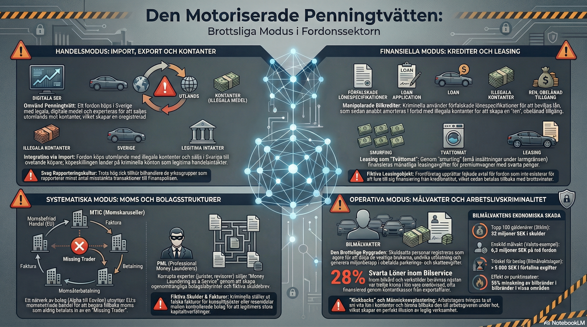

Utbildningsmodul · Finansiell brottslighet
Brottsliga modus i fordonssektorn — en utömmande analys av metoder, mekanismer och motåtgärder
Visuell översikt

Infografik: Fyra primära modus — handel, finansiell, systematisk och operativ brottslighet i fordonssektorn
⬇ Ladda ner bildTypologier
Handelsmodus
Fordon används som bärare av värden över gränser. Omvänd penningtvätt — fordon köps med lagliga medel och exporteras mot kontanter — skapar en oregistrerad kapitalflykt.
Finansiella modus
Kriminella utnyttjar finansiella produkter för att skapa ren tillgång. Manipulerade bilkrediter och leasing som "tvättomat" är etablerade typologier.
Systematiska modus
Komplexa bolagsnätverk utnyttjar EU:s momsfria handel och skapar ogenomträngliga strukturer. MTIC-bedrägeri och professionella penningtvättare (PML) är centrala element.
Operativa modus
Skuldsatta personer rekryteras som bilmålvakter. 28 % av bilskrots- och verkstadsarbetare berörs av svarta löner. Kickbacks och löneavstängning skapar en illusion av legitimitet.
Nyckeldata
Forskningsrapport
Den globala och nationella fordonsindustrin utgör en fundamental pelare i den legitima ekonomin, men dess inneboende särdrag har under de senaste decennierna gjort den till en av de mest attraktiva sektorerna för organiserad ekonomisk brottslighet.
Bilar och andra motorfordon är kapitalintensiva tillgångar med hög grad av internationell rörlighet, vilket skapar en idealisk plattform för kriminella nätverk som söker omvandla, förflytta och integrera illegala medel i det legala finansiella systemet.
Analyser av underrättelseinformation och misstankerapporter från Finanspolisen indikerar en oroväckande hög penetration av kriminella element inom branschen. Det uppskattas att drygt ett av femton företag som är aktiva inom fordonssektorn i Sverige har kopplingar till brottslig verksamhet.
Denna statistik understryker att utnyttjandet av fordonsbranschen inte rör sig om isolerade anomalier, utan snarare om en systematisk och välstrukturerad infiltration.
Penningtvätt inom fordonsbranschen manifesterar sig genom ett spektrum av komplexa metoder och typologier — från traditionella kontantköp avsedda att skikta narkotikaIntäkter, till högteknologiska och multinationella skattebedrägieri (MTIC), samt den storskaliga och systemhotande arbetslivskriminaliteten.
Vidare fungerar fordon inte enbart som finansiella instrument för penningtvätt, utan utgör även kritisk logistisk infrastruktur för annan brottslighet — ett förhållande som tydliggörs genom fenomenet med fordonsmålvakter (bilmålvakter).
Trots den höga tillgång till information som bilhandlare har tillgång till, utgör de yrkesgrupper som rapporterar minst antal misstänkta transaktioner till Finanspolisen. Detta understryker behovet av riktade utbildningsinsatser och förstärkt tillsyn inom sektorn.
Punktinsatser har visat sig effektiva — i vissa områden har bilbränder minskat med upp till 55% efter riktade åtgärder mot bilmålvaktsstrukturer, vilket indikerar ett direkt samband med kriminell verksamhet.
Utbildningsmaterial
PowerPoint-presentation med 15 slides. Täcker alla fyra brottsmodus, statistik, typologier och rekommendationer. Lämplig för utbildningar, föreläsningar och interna seminarier.
⬇ Ladda ner PPTX-presentation{kind=link}